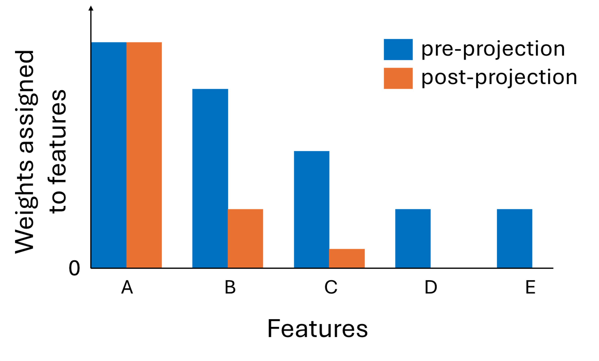

An effective technique for obtaining high-quality representations is adding a projection head on top of the encoder during training, then discarding it and using the pre-projection representations. Despite its proven practical effectiveness, the reason behind the success of this technique is poorly understood. The pre-projection representations are not directly optimized by the loss function, raising the question: what makes them better? In this work, we provide a rigorous theoretical answer to this question. We start by examining linear models trained with self-supervised contrastive loss. We reveal that the implicit bias of training algorithms leads to layer-wise progressive feature weighting, where features become increasingly unequal as we go deeper into the layers. Consequently, lower layers tend to have more normalized and less specialized representations. We theoretically characterize scenarios where such representations are more beneficial, highlighting the intricate interplay between data augmentation and input features. Additionally, we demonstrate that introducing non-linearity into the network allows lower layers to learn features that are completely absent in higher layers. Finally, we show how this mechanism improves the robustness in supervised contrastive learning and supervised learning. We empirically validate our results through various experiments on CIFAR-10/100, UrbanCars and shifted versions of ImageNet. We also introduce a potential alternative to projection head, which offers a more interpretable and controllable design.
We show that pre-projection representations represent input features more equally or capture a broader range of features compared to post-projection representations. This results in pre-projection representations being relatively less specialized towards the training objective, which is beneficial especially when the pretraining task assigns lower weights to features useful for the downstream task.
We further demonstrate, both theoretically and empirically, various concrete scenarios where this property enhances pre-projection representations. These scenarios include
We also demonstrate the potential of using a simple fixed reweighting head as an alternative to typical trainable MLP projection heads. Check out our paper for more details!
@inproceedings{xue2023investigating,
title={Investigating the Benefits of Projection Head for Representation Learning},
author={Xue, Yihao and Gan, Eric and Ni, Jiayi and Joshi, Siddharth and Mirzasoleiman, Baharan},
booktitle={The Twelfth International Conference on Learning Representations},
year={2023}
}